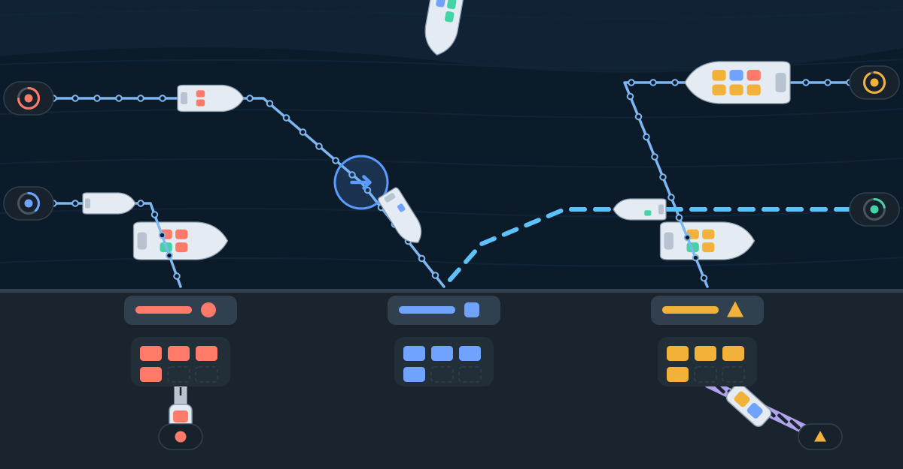
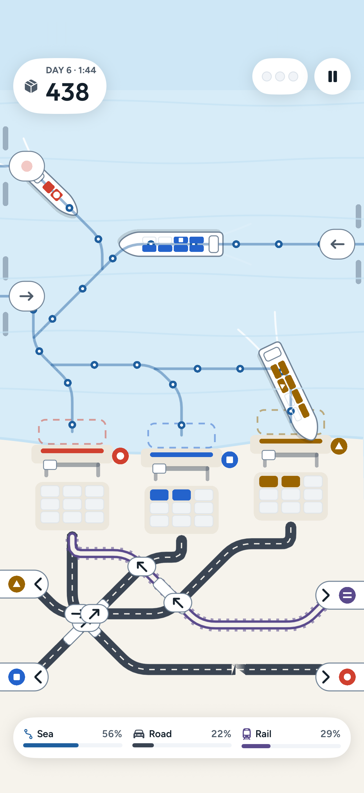
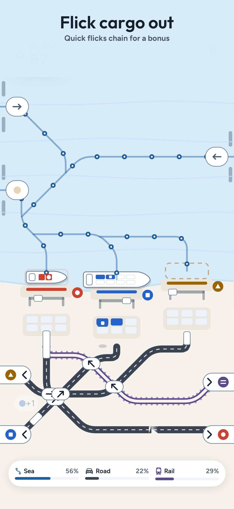
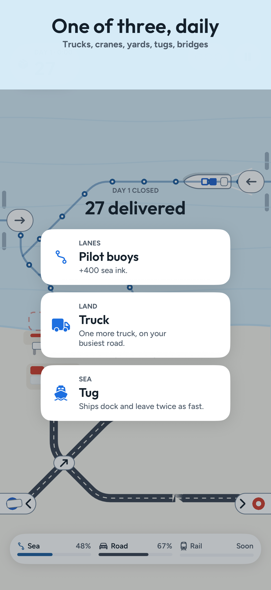

Tideway: Harbor Traffic
Ships keep arriving. Every lane you draw stays.
Drag a lane from a gate to a berth and the ship follows it — and so does the next one, and the one after that. A day lasts three minutes. You play with one finger.
Coming to the App Store. Free to download, with one optional unlock at $3.99. No ads, with or without it. No subscriptions, no accounts. iPhone and iPad, iOS 18 or later.

- Harbours3
- Named days7
- Minute days3
- Lane kinds3
- Upgrades7
Three things, and that is the game
There is one verb. You draw. Everything else is what the harbour does with what you drew.
Draw a lane
Drag from a gate to a berth. The ship waiting at that gate follows the lane, and so does every ship that arrives there afterwards. Branch it to a second berth, merge it into one you already have.
Watch it fill
Cranes lift the boxes off. They stack in the yard behind the berth, and a road or a rail line carries them inland. A yard that fills up stops the crane, and the ship behind it waits.
Fix it while it runs
Press and hold a lane to take it out and get the ink back. Flick a box straight out of a full yard with a short swipe. Quick flicks in a row chain for a bonus.
Two ships, one crossing, a real rule
Where two of your lanes cross, the ships use the rule actual ships use: the one with the other on its starboard side gives way. A pill appears on the crossing with an arrow showing who goes.
Or overrule it
Tap the pill to take harbour control and the crossing flips: the ship that was holding goes, the one that was going holds. The pill turns blue so you can see every crossing you are managing by hand.
It is a choice, not a chore
Give way costs seconds. A crossing you never touch is a crossing that resolves itself correctly and slowly. The question is which ones are worth your thumb while the clock runs.
Seven days, then it stops being polite
Each day is three minutes and brings one new thing. Pick one of three upgrade cards at the end of each. Three strikes end the run.
Opening day
Box ships and rail
Amber and a third gate
Busy tides
Storm day
Rush hour
Last tide
Overtime
Colour is never the only thing telling you
Four cargoes, four colours, four shapes. The shape is on the container, on the berth pad, on the depot badge and on the ship. Tideway passes a greyscale playtest, which is a test the project actually runs.
Every control has a VoiceOver label, the interface scales with Dynamic Type, and Reduce Motion is honoured. The game plays in full with Game Center switched off.
The real thing
These are screenshots, captured from play at fixed seeds so they can be taken again.




What it costs
Free, and one unlock at $3.99
Tideway shows no ads to anyone, paid or free, and links no ad network. Tideway Plus is a single purchase, not a subscription.
- Two more harbours: Two Rivers and Old Port.
- Free Harbour: play on with no strikes.
- A reroll of the three upgrade cards at the end of each day.
Restore Purchases is on the Plus sheet and in Settings. No account, no login, no backend — everything is stored on the device.